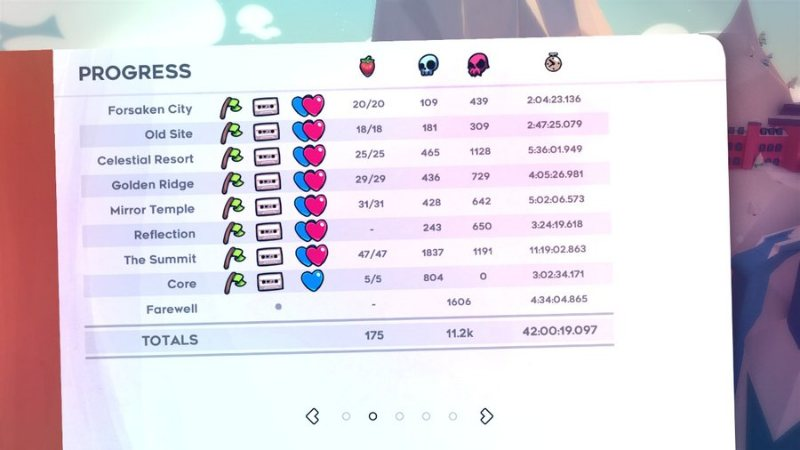

celeste
logs
03.may.23recently bought this game and its been soooo fun!! been finding myself relating to madeline So Much as well... i'm on chapter 7 so far. will be finishing it pretty soon! oh and the soundtrack by lena raine is so fucking goodddddd. you can read more of my thoughts on it here!
06.may.23ok i finished it... man. i loved it a lot. not only were the chapters and level design super good, but it kinda surprised me how much i relate to madeline and her struggles  i hope to learn a thing or two from the story. how you shouldn't push away the part of you that you hate and instead try to understand it's point of view and work together... idk man that was beautiful to me. and the challenges while a bit hard at times (i died 2k+ times im pretty sure) it was so rewarding to complete them once you Get It. i don't think i'll do it rn but i do wanna replay it so i can get all the blue hearts and play chapter 8
i hope to learn a thing or two from the story. how you shouldn't push away the part of you that you hate and instead try to understand it's point of view and work together... idk man that was beautiful to me. and the challenges while a bit hard at times (i died 2k+ times im pretty sure) it was so rewarding to complete them once you Get It. i don't think i'll do it rn but i do wanna replay it so i can get all the blue hearts and play chapter 8
screenshot from my first run!
08.may.23guys i am. very lowkey obsessed with this game  been collecting all the strawberies, completing some b-sides, and its all been so fun!!! im honestly very surprised with how much i've been enjoying it despite the challenge that it packs. it's def possible tho! i'm looking forward to 100% this game
been collecting all the strawberies, completing some b-sides, and its all been so fun!!! im honestly very surprised with how much i've been enjoying it despite the challenge that it packs. it's def possible tho! i'm looking forward to 100% this game
10.may.23okay i have been informed of the c-sides.... i don't think i will be 100% this game BUT i do wanna get all the blue hearts and the b-sides
12.may.23progress so far! cant believe ive collected all the berries!
28.may.23sooooo. i am currently on chapter 9 part 6 (which is you didnt know is the last and hardest chapter in the game) and boy i think its been an entire week since i got stuck in a level. well. not really stuck. i can see myself making progress! but boy is it taking me a while to get through chapter 9's parts... and im not even halfway. besides that i got through most of chapter 8's b-side! i think i gotta do one more part and i'll be done with the b-sides
here's my updated progress! well it has more death counts now but other than that its pretty much the same
i also wanted to share a clip of the shit they are making me do like SEND HELP!!!
21.mar.24 WELL.... at one point during may i kinda got stuck in the very last bside so... i never finished them......... maybe one day i'll return to them.
screenshots